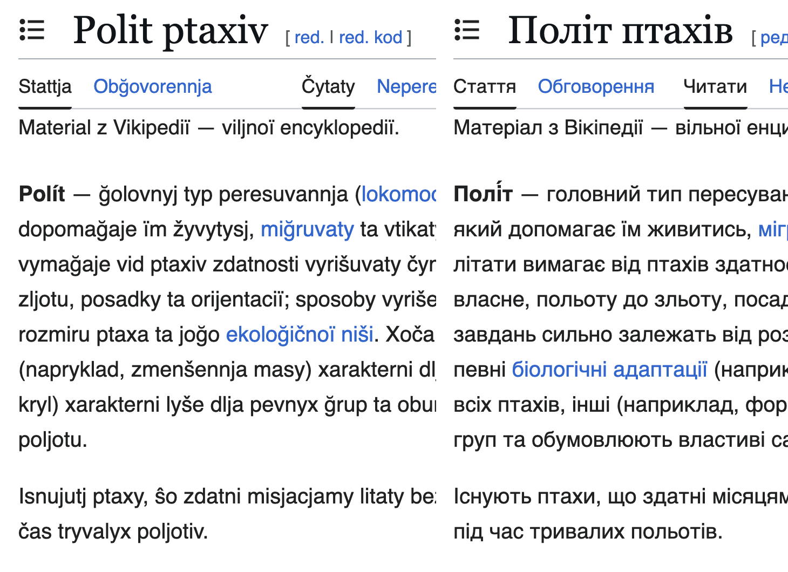
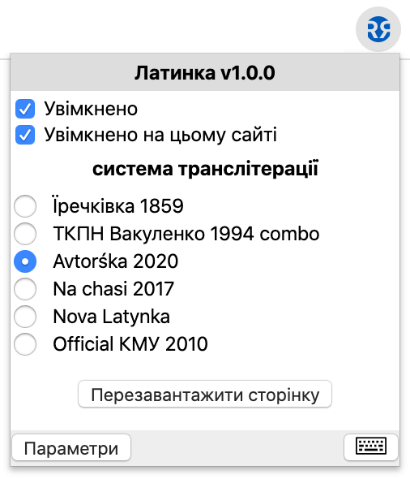
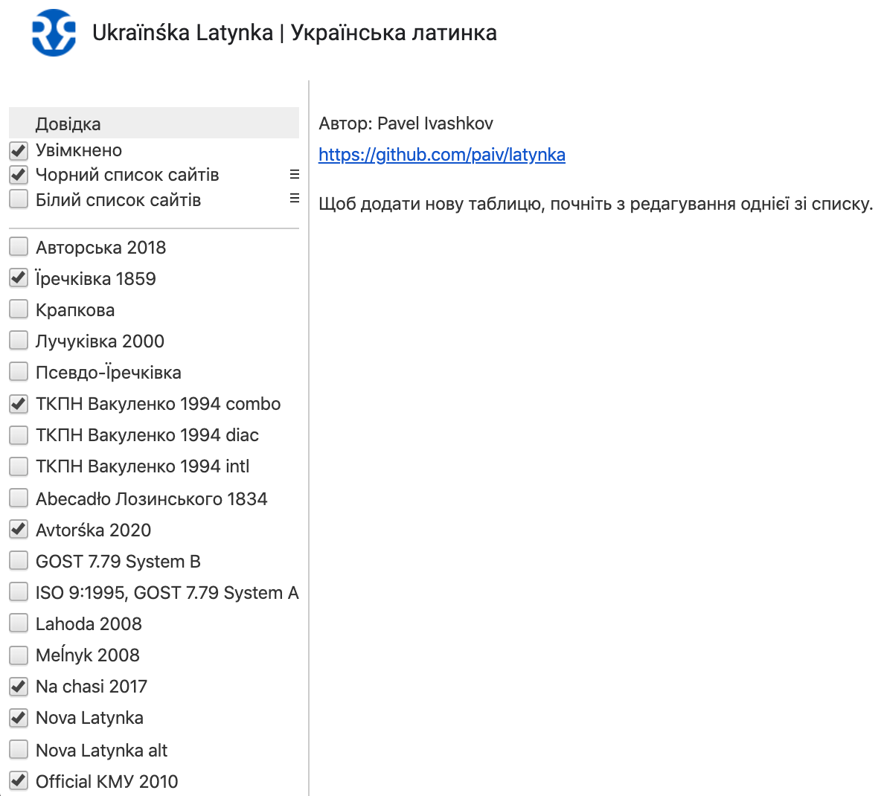
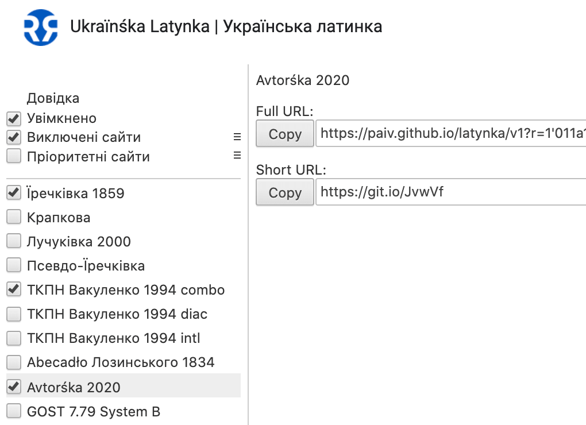
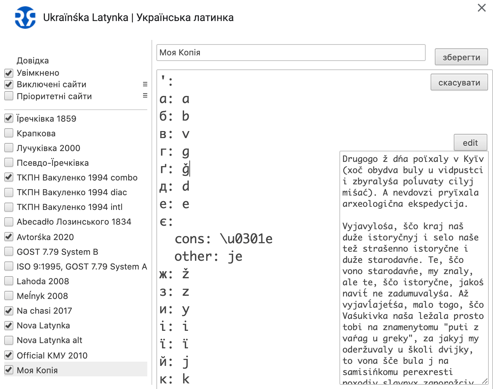
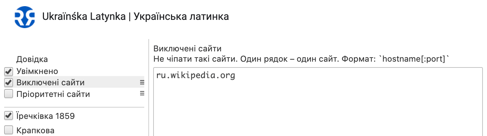
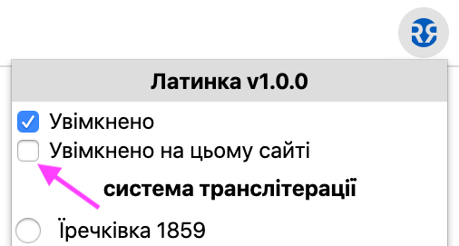
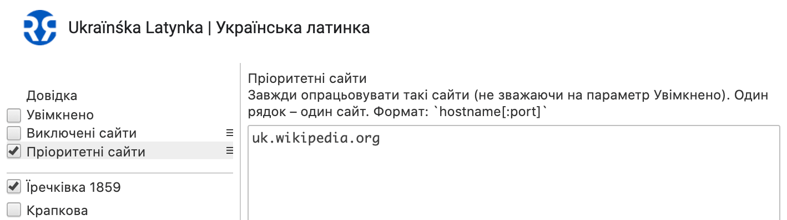
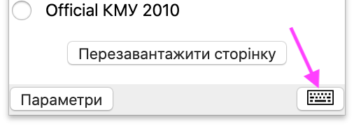
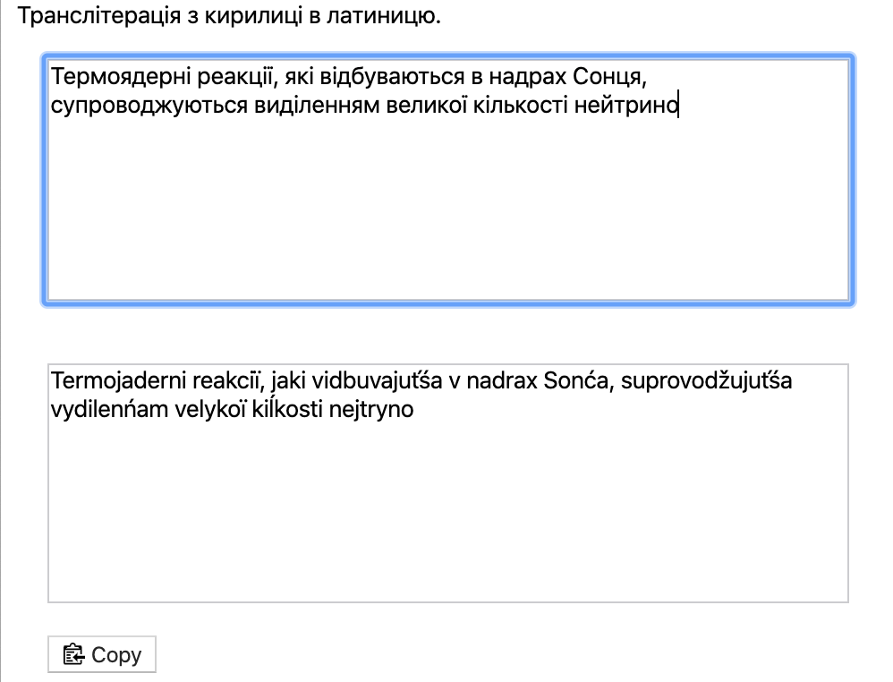

Ukraïnsjka Latynka | Українська Латинка
додаток до браузерів для української латиниці
Автоматична транслітерація кириличного тексту в латиницю на веб-сторінках.

Обирайте систему латинизації у спливаючому вікні.

Більше проєктів латинизації є в налаштуваннях розширення. Позначте у списку ті,
що будуть доступні у спливаючому вікні.

Поділіться вподобаною системою латинизації у соцмережах.

Або створіть власну систему латинизації. Просто почніть з редагування вподобаної
в налаштуваннях розширення.

Впишіть ті сайти, де транслітерацію буде вимкнено.

Чи просто вимкніть той сайт у спливаючому вікні.

Або ж додайте пріоритетні сайти, та вимкніть транслітерацію на всіх інших.

Використовуйте екран вводу для транслітерації тексту.

